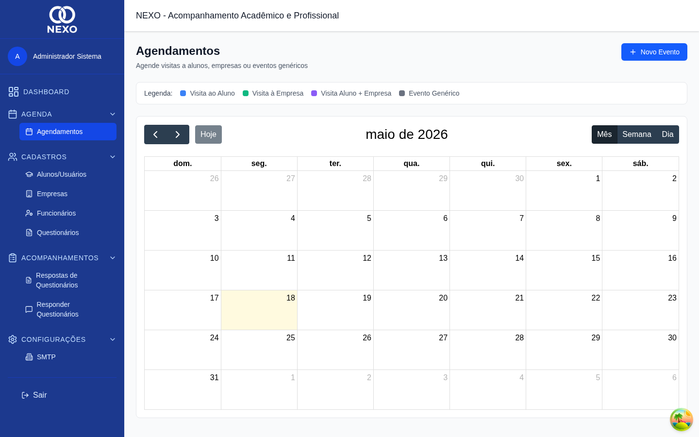
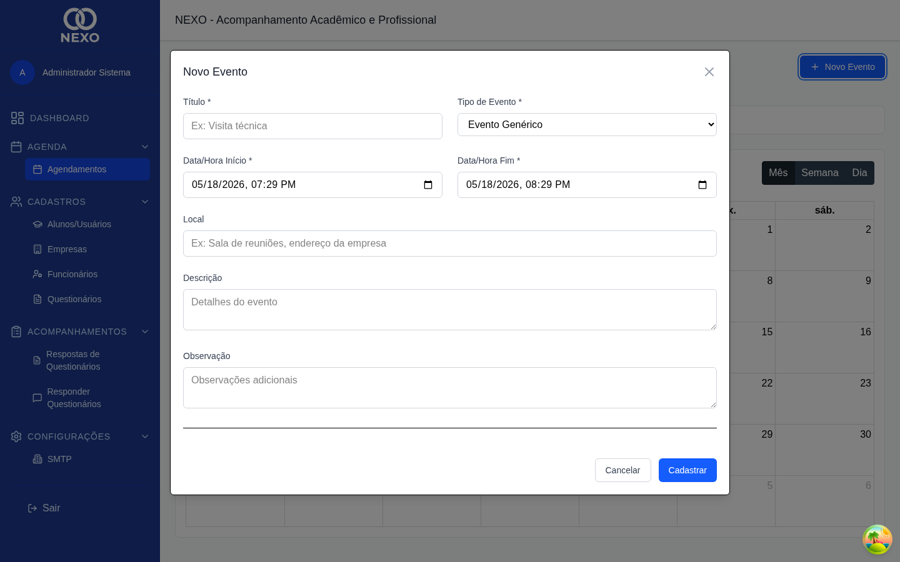
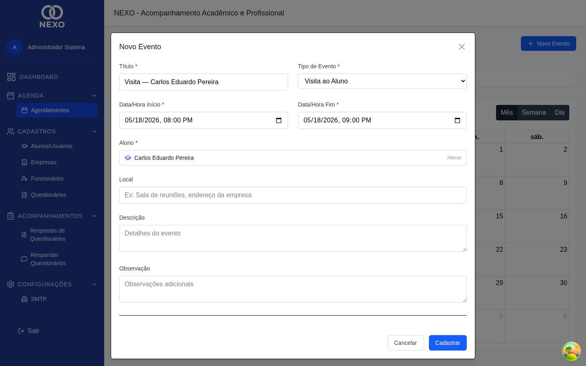

Agenda
A agenda do NEXO usa um calendário visual para registrar visitas, avaliações, reuniões e outros eventos relacionados a alunos e empresas.
| Ação | ADM | RH | COORD | PROF | DIR |
|---|---|---|---|---|---|
| Visualizar agenda | ✓ | ✓ | ✓ | ✓ | ✓ |
| Criar / editar / excluir evento | ✓ | ✓ | ✓ | ✓ | ✓ |
1. Abrir a agenda
No menu, abra Agenda → Agendamentos. O calendário abre no modo mês; use os botões superiores para alternar entre mês, semana e dia.

2. Criar um novo evento
-
Clicar em um dia (ou horário)
No modo mês, clique em uma data. Nos modos semana/dia, arraste o cursor para selecionar a faixa de horário desejada.
-
Preencher os dados do evento
Preencha o Título, escolha o tipo (visita, avaliação, reunião ou genérico) e ajuste as datas de início e fim. Vincule um aluno e/ou uma empresa se aplicável.

Modal de evento com tipo e vínculos. -
Salvar
Clique em Salvar. O evento aparece no calendário com a cor correspondente ao seu tipo.
3. Editar ou apagar um evento
Clique sobre o evento no calendário para abrir o modal de edição. Faça as alterações e clique em Salvar, ou em Deletar para removê-lo.
4. Criar evento a partir de um aluno
Na lista de alunos, o ícone de calendário na linha do aluno pré-preenche um evento já vinculado a ele (útil para visitas e avaliações).

Cada tipo de evento tem uma cor própria, facilitando uma leitura rápida do calendário. Os eventos próximos também aparecem no Dashboard.